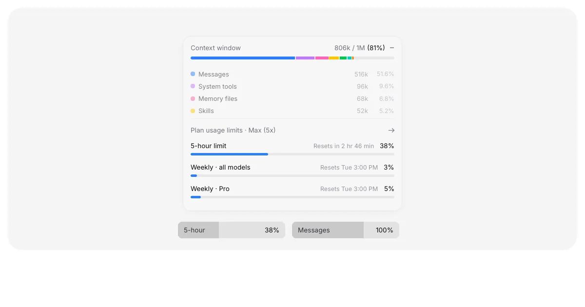

Agent Limits Card
A context-window bar segmented by token bucket plus plan limits with reset times; clicking the header grows the card to reveal the per-bucket breakdown.

Usage
Add glowkit next to eframe:
cargo add glowkit eframeThen draw it inside any egui Ui:
use glowkit::prelude::*;
use glowkit::interactions::{BoardAgentLimits, BoardBucket, BoardLimit};
ui.add(BoardAgentLimits::new(1_000_000.0)
.buckets(vec![BoardBucket::new("Messages", 520_000.0), BoardBucket::new("Tools", 180_000.0)])
.limits(vec![BoardLimit::new("5-hour limit", "Resets in 2 hr 46 min", 0.38)]));Prefer to own the code? The glowkit CLI copies this component's source into your project, shadcn-style:
cargo install glowkit-cli
glowkit add board-agent-limits-cardEquivalent to
If you know this pattern from BoardUI, Agent Limits Card is the Rust version: an original egui implementation, not a port, that runs natively and in WebAssembly.
- Agent Limits CardBoardUI
About Agent Limits Card
Agent Limits Card is one of 84 components in glowkit's AI category. It lives in the glowkit-interactions crate, enabled by the interactions feature of glowkit (on by default). It reads its colors from the active glowkit theme, so it matches the rest of your app in light, dark or a custom brand theme, and every color, size and timing has a setter to override it.
Everything an AI app needs on screen: streaming Markdown chat, prompt inputs with attachments, reasoning and chain-of-thought panels, tool calls with live arguments, approvals, diff review, traces, agent trees, run monitors, cost and context meters, voice orbs and MCP server managers. Pair them with glowkit-stream to drive them from a real AG-UI, Vercel AI SDK, ACP, rig or OpenAI-compatible stream.